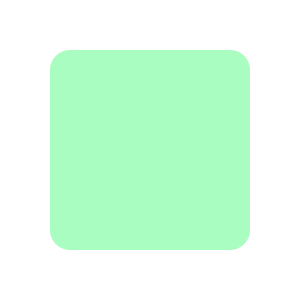
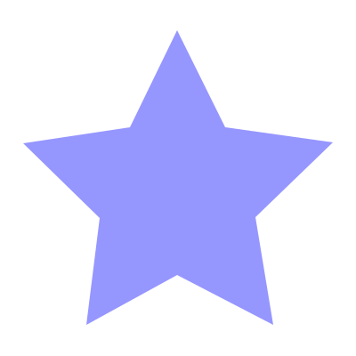
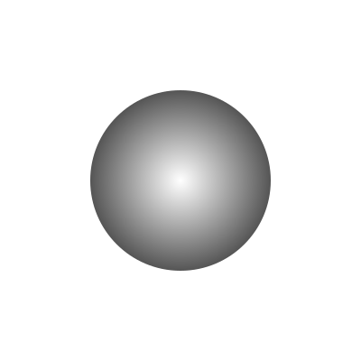
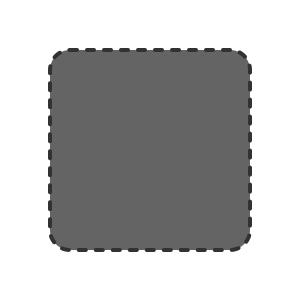
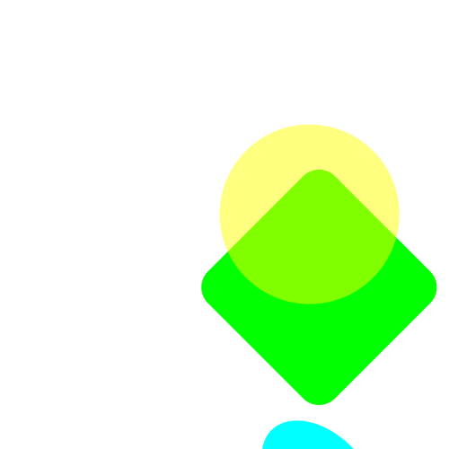
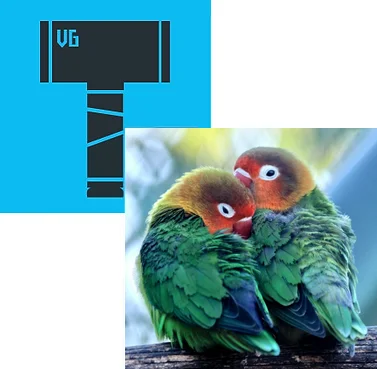
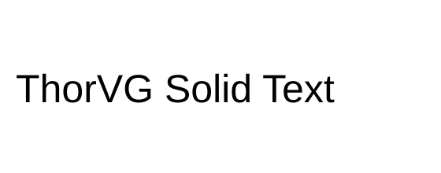
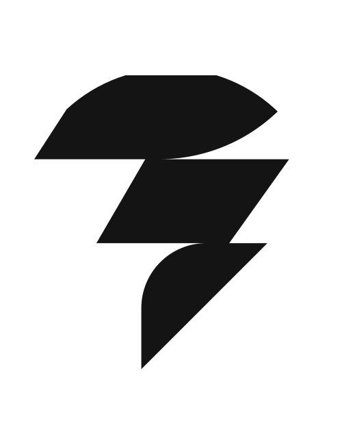

Tutorial
It explains how to set up the environment for building ThorVG and how to draw various graphic elements through ThorVG with simple examples.
Build and install
You can download the ThorVG tarball via the Releases link. The latest version is recommended. ThorVG supports the meson build system. Install meson and ninja if you don't have them already.
Run meson to configure ThorVG in the thorvg root folder.
meson setup builddirRun ninja to build and install ThorVG.
ninja -C builddir installRegardless of the installation, all build results (symbols, executable) are generated in the builddir folder in thorvg. Some results such as examples won't be installed — see the More examples section to see how to change it.
Note that some systems might include the ThorVG package as a default component. In that case, you can skip this manual installation.
Build with Visual Studio
If you want to create Visual Studio project files, use the command --backend=vs. The resulting solution file (thorvg.sln) will be located in the build folder.
meson setup builddir --backend=vsBuild with Xcode
If you want to create Xcode project files, use the command --backend=xcode. The resulting project file (thorvg.xcodeproj) will be located in the build folder.
meson setup builddir --backend=xcodeThorVG WebCanvas is available via NPM-based package managers (npm, yarn, pnpm) and can also be accessed through the unpkg CDN. The latest version is recommended.
Install via NPM
Install ThorVG WebCanvas via npm:
npm install @thorvg/webcanvasThen import it in your TypeScript or JavaScript code:
import ThorVG from '@thorvg/webcanvas';Install via CDN
For quick prototyping or simple projects, you can use ThorVG WebCanvas directly from a CDN without any build tools.
<script src="https://unpkg.com/@thorvg/webcanvas@latest/dist/webcanvas.js"></script>Basic Programming
ThorVG supports C++ Programming Interfaces. The following is a quick-start to show you how to use the essential APIs. As the prerequisite, include the ThorVG header file in your source code.
#include <thorvg.h>ThorVG WebCanvas supports TypeScript and JavaScript Programming Interfaces. The following is a quick-start to show you how to use the essential APIs.
Initialization
In the first step, initialize the ThorVG engine. This prepares and runs the engine's internal steps.
// Initialize the ThorVG engine
tvg::Initializer::init(0);import ThorVG from '@thorvg/webcanvas';
// Initialize the ThorVG engine
const TVG = await ThorVG.init({ renderer: 'gl' });The second parameter of Initializer::init() requires the ThorVG designated threads number. To use the full capacity of the system, you can pass the number of threads to run ThorVG tasks. If you don't know the exact number, you can use std::thread::hardware_concurrency() instead.
The renderer option determines which rendering backend to use: gl for the WebGL backend with wide browser support, or wg for the WebGPU backend (requires Chrome/Edge 113+, Firefox 145+, or Safari 26+). If you need to locate the WASM files in a specific directory, pass a locateFile option.
ThorVG renders vector scenes to the given canvas buffer. The following shows an example of how to prepare an empty canvas for drawing.
// A canvas target buffer
static uint32_t buffer[WIDTH * HEIGHT];
// Generate a canvas
auto canvas = tvg::SwCanvas::gen();
// Setup the canvas target
canvas->target(buffer, WIDTH, WIDTH, HEIGHT, tvg::ColorSpace::ARGB8888);// Create a canvas targeting an HTML canvas element
const canvas = new TVG.Canvas('#canvas', {
width: 800,
height: 600
});If you have your own canvas buffer memory, you can pass its pointer to the canvas. SwCanvas::target() requires five parameters: buffer memory, buffer stride size, canvas width, height and Colorspace. The last parameter determines the format of the pixel color channels used during drawing on the canvas buffer.
The Canvas constructor requires a CSS selector for the target HTML canvas element and optional configuration. WebCanvas automatically manages the canvas buffer and handles the device pixel ratio for high-DPI displays.
Shape
Once a canvas is ready, you can create shapes by adding them to the canvas.
// Generate a shape
auto rect = tvg::Shape::gen();
// Append a rounded rectangle to the shape (x, y, w, h, rx, ry)
rect->appendRect(50, 50, 200, 200, 20, 20);
// Set the shape's color to (r, g, b)
rect->fill(170, 253, 193);
// Add the shape to the canvas
canvas->add(rect);// Generate a shape
const rect = new TVG.Shape();
// Append a rounded rectangle to the shape (x, y, w, h, rx, ry)
rect.appendRect(50, 50, 200, 200, { rx: 20, ry: 20 });
// Set the shape's color to (r, g, b)
rect.fill(170, 253, 193);
// Add the shape to the canvas
canvas.add(rect);In the example above, a shape is generated and then a rounded rectangle is appended to it. ThorVG provides predefined shape types such as rectangle, circle and arc for the user's convenience. You can append any custom shape by using Paths. ThorVG allows you to append multiple forms into a shape, to compose a more complex one. A complex shape shares its properties, such as color, stroke, fill, etc., among the appended forms.
After a rounded rectangle is appended, its color is set and then the shape is added to the canvas. This shape from the example looks as follows.

Path
Besides predefined shape types, you can compose arbitrary shape types using a path concept. A path is a list of commands that are commonly used in traditional 2D vector drawing. Below you can see an example of how to define your own forms.
// Generate a shape
auto path = tvg::Shape::gen();
// Set the sequential path coordinates
path->moveTo(199, 34);
path->lineTo(253, 143);
path->lineTo(374, 160);
path->lineTo(287, 244);
path->lineTo(307, 365);
path->lineTo(199, 309);
path->lineTo(97, 365);
path->lineTo(112, 245);
path->lineTo(26, 161);
path->lineTo(146, 143);
// Complete the path
path->close();
// Set the shape's color to (r, g, b)
path->fill(150, 150, 255);
// Add the shape to the canvas
canvas->add(path);// Generate a shape
const path = new TVG.Shape();
// Set the sequential path coordinates
path.moveTo(199, 34)
.lineTo(253, 143)
.lineTo(374, 160)
.lineTo(287, 244)
.lineTo(307, 365)
.lineTo(199, 309)
.lineTo(97, 365)
.lineTo(112, 245)
.lineTo(26, 161)
.lineTo(146, 143)
// Complete the path
.close()
// Set the shape's color to (r, g, b)
.fill(150, 150, 255);
// Add the shape to the canvas
canvas.add(path);By using the Path, lines and Bezier curves can be drawn. Additionally, you can set a preset list using Shape::appendPath() for optimal data delivery.
By using the Path, lines and Bezier curves can be drawn. Additionally, you can set a preset list using shape.appendPath() for optimal data delivery.
The output of the example is as follows.

Fill
ThorVG supports both solid color fills and gradient fills. You can use linear gradients and radial gradients to create rich visual effects.
// Generate a shape
auto circle = tvg::Shape::gen();
// Append a circle to the shape (cx, cy, rx, ry)
circle->appendCircle(200, 200, 100, 100);
// Generate a radial gradient
auto fill = tvg::RadialGradient::gen();
// Set the radial gradient geometry info (cx, cy, radius)
fill->radial(200, 200, 150);
// Gradient colors
tvg::Fill::ColorStop colorStops[2];
// 1st color values (offset, r, g, b, a)
colorStops[0] = {0.0, 255, 255, 255, 255};
// 2nd color values (offset, r, g, b, a)
colorStops[1] = {1.0, 0, 0, 0, 255};
// Set the gradient colors info
fill->colorStops(colorStops, 2);
// Set the shape fill
circle->fill(fill);
// Add the shape to the canvas
canvas->add(circle);// Generate a shape
const circle = new TVG.Shape();
// Append a circle to the shape (cx, cy, rx, ry)
circle.appendCircle(200, 200, 100, 100);
// Generate a radial gradient (cx, cy, radius)
const fill = new TVG.RadialGradient(200, 200, 150);
// Set the gradient colors (offset, [r, g, b, a])
fill.addStop(0, [255, 255, 255, 255]);
fill.addStop(1, [0, 0, 0, 255]);
// Set the shape fill
circle.fill(fill);
// Add the shape to the canvas
canvas.add(circle);The output of the example is as follows.

Stroke
Stroking enables you to draw the outline of shapes as well as lines. You can simply add stroke properties to a shape if needed. Stroke supports both a solid color and a gradient fill, and also 4 major properties — width, cap, join and dash pattern.
// Generate a shape
auto rect = tvg::Shape::gen();
// Append a round rectangle to the shape (x, y, w, h, rx, ry)
rect->appendRect(50, 50, 200, 200, 20, 20);
// Set the shape's color to (r, g, b)
rect->fill(100, 100, 100);
// Set the stroke's width
rect->strokeWidth(4);
// Set the stroke's color to (r, g, b)
rect->strokeFill(50, 50, 50);
// Set the stroke's join style
rect->strokeJoin(tvg::StrokeJoin::Round);
// Set the stroke's cap style
rect->strokeCap(tvg::StrokeCap::Round);
// Set the stroke's dash pattern (line, gap)
float pattern[2] = {7, 10};
rect->strokeDash(pattern, 2);
// Add the shape to the canvas
canvas->add(rect);// Generate a shape
const rect = new TVG.Shape();
// Append a round rectangle to the shape (x, y, w, h, rx, ry)
rect.appendRect(50, 50, 200, 200, { rx: 20, ry: 20 });
// Set the shape's color to (r, g, b)
rect.fill(100, 100, 100);
// Set the stroke properties
rect.stroke({
width: 4,
color: [50, 50, 50, 255],
join: 'round',
cap: 'round'
});
// Add the shape to the canvas
canvas.add(rect);The output of the example is as follows.

Scene and Transformation
ThorVG provides an interface to build Paint groups by composing multiple Paints. This is useful when you consider a scene-graph structure and manipulate a scene as a control unit. The code below shows how to use the ThorVG Scene and transform it.
// Generate a Scene
auto scene = tvg::Scene::gen();
// Generate a round rectangle
auto rect = tvg::Shape::gen();
rect->appendRect(-235, -250, 400, 400, 50, 50);
rect->fill(0, 255, 0);
// Add the rectangle to the scene
scene->add(rect);
// Generate a circle
auto circle = tvg::Shape::gen();
circle->appendCircle(-165, -150, 200, 200);
// Set the shape's color to (r, g, b, a)
circle->fill(255, 255, 0, 127);
// Add the circle to the scene
scene->add(circle);
// Generate an ellipse
auto ellipse = tvg::Shape::gen();
ellipse->appendCircle(265, 250, 150, 100);
ellipse->fill(0, 255, 255);
// Add the ellipse to the scene
scene->add(ellipse);
// Transform the scene
scene->translate(350, 350);
scene->scale(0.5);
scene->rotate(45);
// Add the scene to the canvas
canvas->add(scene);// Generate a Scene
const scene = new TVG.Scene();
// Generate a round rectangle
const rect = new TVG.Shape();
rect.appendRect(-235, -250, 400, 400, { rx: 50, ry: 50 });
rect.fill(0, 255, 0);
// Add the rectangle to the scene
scene.add(rect);
// Generate a circle
const circle = new TVG.Shape();
circle.appendCircle(-165, -150, 200, 200);
// Set the shape's color to (r, g, b, a)
circle.fill(255, 255, 0, 127);
// Add the circle to the scene
scene.add(circle);
// Generate an ellipse
const ellipse = new TVG.Shape();
ellipse.appendCircle(265, 250, 150, 100);
ellipse.fill(0, 255, 255);
// Add the ellipse to the scene
scene.add(ellipse);
// Transform the scene
scene.translate(350, 350)
.scale(0.5)
.rotate(45);
// Add the scene to the canvas
canvas.add(scene);All kinds of Paint type nodes (Shape, Scene and Picture) can be added to the Scene as its children. You can scale this logic and build a complex scene by compositing multiple Scenes. In the example, we create a scene-graph tree and demonstrate how to transform it using translate(), scale() and rotate() methods.
The output of the example is as follows.

Picture
The Picture is a special component that is designed to draw a scene on the Canvas from image data. ThorVG supports several image formats including vector-based and bitmap-based formats.
// Generate a picture (svg)
auto svg = tvg::Picture::gen();
// Load an svg file
svg->load("logo.svg");
// Add the picture to the canvas
canvas->add(svg);
// Generate a picture (png)
auto png = tvg::Picture::gen();
// Load a png file
png->load("parrots.png");
// Set the desired size
png->size(300, 300);
// Set the position
png->translate(150, 150);
// Add the picture to the canvas
canvas->add(png);// Generate a picture (svg)
const svg = new TVG.Picture();
// Load an svg file
const svgText = await (await fetch('logo.svg')).text();
svg.load(svgText, { type: 'svg' });
// Add the picture to the canvas
canvas.add(svg);
// Generate a picture (png)
const png = new TVG.Picture();
// Load a png file
const pngData = await (await fetch('parrots.png')).arrayBuffer();
png.load(new Uint8Array(pngData), { type: 'png' });
// Set the desired size
png.size(300, 300);
// Set the position
png.translate(150, 150);
// Add the picture to the canvas
canvas.add(png);The output of the example is as follows.

Text
ThorVG offers robust text rendering capabilities, including support for Scalable TrueType Fonts (TTF). It efficiently handles Unicode text, accepting UTF-8 (or ASCII) characters as input. ThorVG processes these characters by converting them into Unicode codepoints, subsequently generating vector data for the corresponding glyphs. Additionally, ThorVG utilizes the metrics of TTF glyphs to create horizontal layouts, further enhancing its text rendering functionality.
// Load a global font data
tvg::Text::load(EXAMPLE_DIR"/arial.ttf");
// Generate a solid color text for displaying
auto text = tvg::Text::gen();
// Set the font name and font size
text->font("Arial", 50);
// Set the text to display
text->text("ThorVG Solid Text");
// Set the text color (r, g, b)
text->fill(0, 0, 0);
// Set the position
text->translate(150, 150);
// Add the text to the canvas
canvas->add(text);// Load a custom font
const fontData = await fetch('arial.ttf').then((r) => r.arrayBuffer());
TVG.Font.load('Arial', new Uint8Array(fontData));
// Generate a solid color text for displaying
const text = new TVG.Text();
// Set the font name and font size
text.font('Arial').fontSize(50);
// Set the text to display
text.text('ThorVG Solid Text');
// Set the text color (r, g, b)
text.fill(0, 0, 0);
// Set the position
text.translate(150, 150);
// Add the text to the canvas
canvas.add(text);Note that the global font data loaded into ThorVG is typically shared among various text objects. This font data is automatically released when the ThorVG engine is terminated, which is done using Initializer::term(). If you need to immediately free up the font resources, you can manually unload the font data using the Text::unload() API.
Note that the global font data loaded into ThorVG is typically shared among various text objects. This font data is automatically released when the ThorVG engine is terminated, which is done using canvas.destroy(). If you need to immediately free up the font resources, you can manually unload the font data using the TVG.Font.unload() API.
The output of the example is as follows.

Composition
ThorVG applies composition for visual effects such as blending, masking, filtering, etc. You should be aware, though, that a composition may perform additional render-processing on an off-screen buffer. The excessive usage of a composition won't be helpful if lightweight processing is a priority for you. A hint — sometimes you can avoid a composition by changing the application or the design approach while maintaining the same visual effects.
// Generate a picture
auto picture = tvg::Picture::gen();
picture->load(EXAMPLE_DIR"/logo.svg");
// Generate a circle for masking
auto mask = tvg::Shape::gen();
mask->appendCircle(250, 325, 225, 225);
mask->fill(255, 255, 255, 255);
// Set the circle's alpha mask to the picture
picture->mask(mask, tvg::MaskMethod::Alpha);
// Add the picture to the canvas
canvas->add(picture);// Generate a picture
const picture = new TVG.Picture();
const svgText = await (await fetch('logo.svg')).text();
picture.load(svgText, { type: 'svg' });
// Generate a circle for masking
const mask = new TVG.Shape();
mask.appendCircle(250, 325, 225, 225);
mask.fill(255, 255, 255, 255);
// Set the circle's alpha mask to the picture
picture.mask(mask, TVG.MaskMethod.Alpha);
// Add the picture to the canvas
canvas.add(picture);The output of the example is as follows.

Animation
The Animation component facilitates the manipulation of animatable elements, such as Lottie. It enables the display and fundamental control of animated frames. Essentially, one animation instance corresponds to a single picture instance. You can assign any animatable resources to the associated picture and play the animation using the animation instance.
// Generate an animation
auto animation = tvg::Animation::gen();
// Acquire a picture associated with the animation
auto picture = animation->picture();
// Load an animation file
picture->load("lottie.json");
// Figure out the animation duration time in seconds
auto duration = animation->duration();
// Add the picture to the canvas
canvas->add(picture);// Generate an animation
const animation = new TVG.Animation();
// Load an animation file
const lottieData = await (await fetch('lottie.json')).text();
animation.load(lottieData);
// Acquire the picture associated with the animation
const picture = animation.picture;
// Add the picture to the canvas
canvas.add(picture);
// Play the animation
animation.setLoop(true);
animation.play((frame) => {
canvas.update().render();
});First, an animation and a picture are generated. The Lottie file (lottie.json) is loaded into the picture, and then the picture is added to the canvas. The animation frames are controlled using the animation object to play the Lottie animation. Also, you might want to know the animation duration time to run your animation loop.
// Set the current animation frame to display
animation->frame(animation->totalFrame() * progress);
// Update the picture to be redrawn
canvas->update(animation->picture());First, an animation is generated and the Lottie file (lottie.json) is loaded into it. The picture associated with the animation is then added to the canvas. Calling play() drives the animation frame by frame, invoking the callback so the canvas can be updated and re-rendered on each tick.
Let's suppose the progress variable determines the position of the animation, ranging from 0 to 1 based on the total duration time of the animation. Adjusting the progress value allows you to control the animation at the desired position. Afterwards, the canvas is updated to redraw the picture with the updated animation frame.
Drawing, the final step
Once all paint nodes have been added to the canvas, you can request the drawing task as the final step.
canvas->draw();
canvas->sync();canvas.update();
canvas.render();Calling Canvas::draw() triggers the preprocessing stage of the rendering pipeline, but it does not perform rasterization. The actual rasterization occurs when Canvas::sync() is invoked. Since all rendering tasks are executed asynchronously under the hood, you must call Canvas::sync() at an appropriate point to ensure proper synchronization. Once synchronization completes, the rendered image becomes available in the target buffer.
After getting the frame image, you can flush out all the added paint nodes from the canvas with the Canvas::remove() call.
Calling canvas.update() triggers the preprocessing stage of the rendering pipeline, but it does not perform rasterization. The actual rasterization occurs when canvas.render() is invoked.
After getting the frame image, you can flush out all the added paint nodes from the canvas with the canvas.remove() call.
More examples
There are plenty of sample code in thorvg/examples to help you in understanding the ThorVG APIs.
To execute these examples, you can build them with the following meson build option.
meson setup builddir -Dexamples=trueNote that these examples require the SDL dev package for launching. If you're using a Linux-based OS, you can easily install this package from your OS distribution server. For Ubuntu, you can install it with this command.
apt-get install libsdl2-devAlternatively, you can read the official guidance here for other platforms. For more information, please visit the official SDL site.
You can try out ThorVG WebCanvas APIs interactively in the ThorVG Playground. The playground provides live code examples and allows you to experiment with various features in real-time.